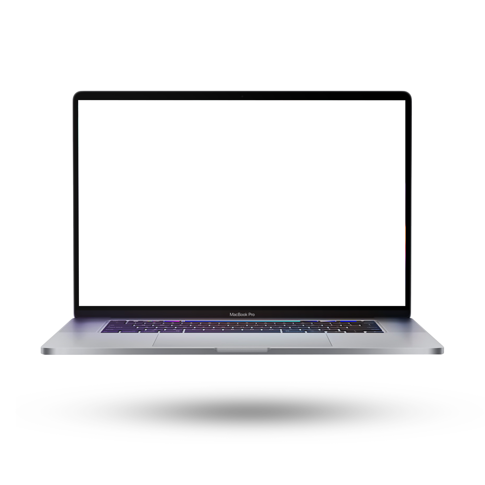

Visual work
Keep colors, screenshots, SVGs, gradients, references, and assets close at hand.
Nocket keeps the things you copy close by, so you can find a sentence, link, color, or file again without breaking your flow.
Download for macOS ↓
Nocket turns your clipboard into a quiet visual layer above the work. Open it with a gesture, search by memory, and paste without losing your train of thought.
The shelf expands above your current app instead of pulling you into another window. A color from Figma, a link from Safari or a snippet from Terminal: everything is ready when the thought comes back.
Text, links, screenshots, images, code, colors, and files become a visual trail of your work. Drag an item into the app in front of you, or paste it with one click.
“I stop asking myself where I put that link. Nocket gives the answer without making me leave the app I’m in.”
Nocket is for the little pieces that keep a day moving: the reference you found, the reply you wrote, the color you liked, the command you’ll need again.
Keep colors, screenshots, SVGs, gradients, references, and assets close at hand.
Save code snippets, commands, errors, JSON, API responses, and links automatically.
Capture hooks, taglines, drafts, research links, and all the phrases worth keeping.
Collect product ideas, competitor screenshots, notes, and daily references without clutter.
Reuse your best replies, email templates, customer notes, and support screenshots.
Find addresses, recipes, links, quotes, images, and anything you meant to save.
No subscription, no license key, no catch. Nocket is MIT licensed. Read the code, change it, or just use it.
Everything you need to know about the Nocket notch shelf, privacy, compatibility, and clipboard storage.
Move your pointer to the MacBook notch or use the keyboard shortcut. Nocket expands above your current app, then closes when you’re done.
No. Your clipboard history stays on your Mac. Nocket is local first and private by default.
Text, links, screenshots, images, code, colors, and files, all organized in a visual history.
Yes. The notch shelf is the signature experience, while a keyboard shortcut keeps Nocket fast on Macs with any display.
Nocket is being built for modern Macs running macOS Sonoma 14 or later.
No. Nocket is free and open source under the MIT license: no payment, no account, no catch.